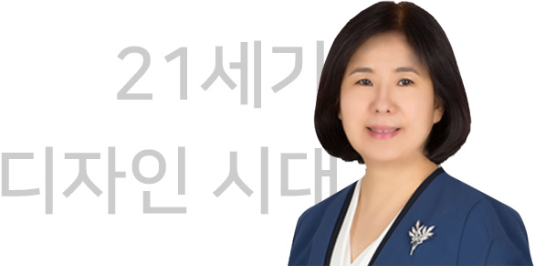

기관정보및사업정보>원장인사말
인사말

한국디자인진흥원장 윤주현
- 21세기 디자인 시대, 한국디자인진흥원 홈페이지를 방문하여 주신 여러분을 진심으로 환영합니다.
- 한국디자인진흥원은 디자인산업 육성을 위해 국가가 설립한 국내 유일의 디자인 선도·진흥기관입니다.
1970년 이래 디자인기업지원·문화확산·인재육성·미래연구·정보제공 등, 디자인 영역 전반을 아우르며 한국 디자인과 산업 경쟁력 향상을 위해 힘써왔습니다. - 디자인 주도 창업 문화 활성화와 디자인산업의 일자리 창출을 위한 창업보육센터(2010년/2017년, 대전/성남 본원), 디자인 융합연구 수행의 거점인 미래디자인융합센터(2015년, 양산)를 설립 운영하고 있고, 중국 베이징(2013년)과 이우(2015년), 베트남 하노이(2018년), 2019년에는 중국 순더에 한국디자인 사무소를 개소하여 K-디자인이 세계 곳곳에 진출할 수 있도록 지원하고 있습니다.
- 2019년부터 패션, 뷰티, 라이프스타일 디자인에 AI, IT기술을 접목해 스타일테크 산업에 디자인이 혁신 전략으로 활용되도록 추진하고 있습니다.
국민디자인단, 국민UX사업, 도시재생사업 등 공공서비스와 정부 정책에도 서비스디자인이 참여해 사회문제를 해결하고 지역사회를 혁신하는 역할로 자리잡을 수 있도록 하겠습니다. 디자인통합민원센터(drights.kidp.or.kr) 운영으로 디자인 가치를 존중하고 디자인권리가 보호받는 문화를 정착시켜 궁극적으로 건강한 디자인 생태계를 조성하겠습니다. - 한국디자인진흥원이 주관하는 모든 공모전과 선정사업의 심사는 우수하고 검증된 평가위원 풀을 통해 공정성과 투명성을 한층 강화하여 운영하고 있습니다.
디자이너를 비롯한 기업인 여러분의 많은 참여와 관심을 부탁드립니다. - 한국디자인진흥원은 4대 경영방침과 9대 핵심가치를 바탕으로 디자인 주도로 산업과 사회를 혁신하고 모든 국민이 행복한 포용국가를 실현하는 데 기여하겠습니다.
감사합니다.